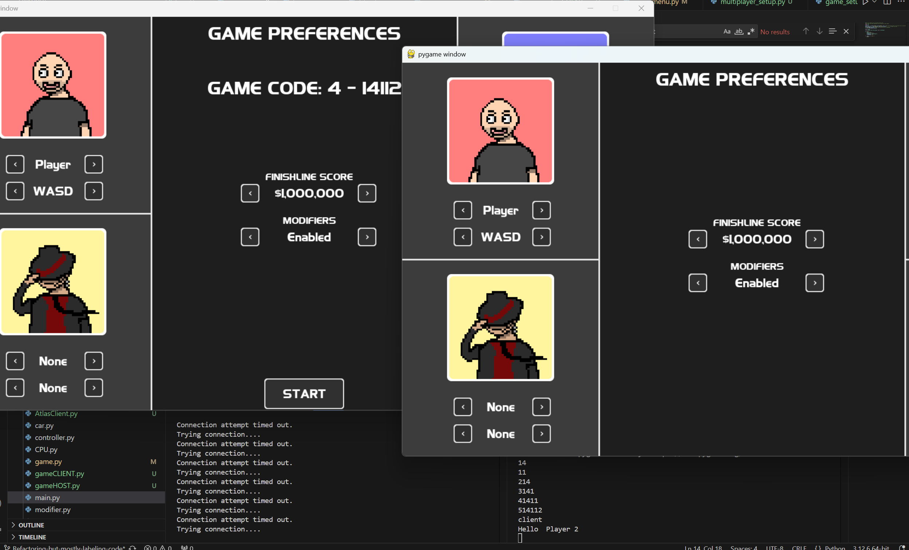
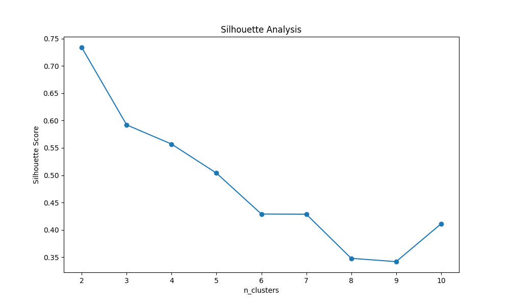
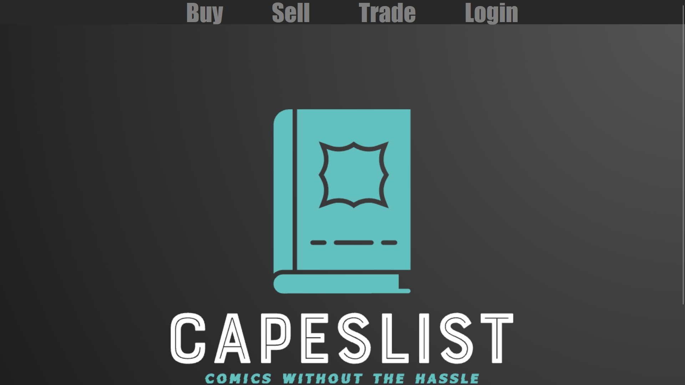

Hi, I'm Nick
About me
I'm a Computer Science major who plans on graduating in December, 2025. I enjoy programming and creating new things along the way such as this website. I have experience with HTML, CSS, C++, Python, Javascript, SQL and plan on becoming familiar with technologies such as Node.js, React, Angular, Bootstrap, and many more. I'm currently searching for an internship where I can display my skills and gain experience. I have a couple projects listed on this website, mainly done in groups within certain classes I have taken.
My GitHub is also linked below the listed projects which will take you to all of my repositories that include most of my class work projects along with other small projects I have done.
Projects
Sticky Fingers
Sticky Fingers is a single or multiplayer game that is based off the game Snake Eyes. It consists of a working online and local multiplayer, continuous deployment, controller support, SCRUM workflow, and CPU players. I personally worked on the art and CPU players, using logic for the CPU to decide which action to take depending on the state of the game.
Railway Incident Clustering
This small project was for a Data Mining Techniques class I took. The purpose for this project was to preform clustering analysis on a dataset containing railway incident data. It uses several machine learning techniques to identify patterns in the data, specifically clustering methods, and evaluate the effectiveness of clustering.
Capes List
This was a group project that was developed for our Database System Design class. I mainly worked on the frontend portion of this project and wrote most of the SQL queries by hand before they were implemented into the project. I learned a little bit of PHP with this project. Definitely plan on replacing this project with something else in the near future.